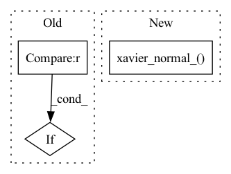

Pattern ID :25261
Before Change
nonlinearity = "leaky_relu"
if self.activation_fn is nn.ReLU:
nonlinearity = "relu"
if self.activation_fn is nn.SELU :
nonlinearity = "selu"
if self.activation_fn is nn.Tanh:
nonlinearity = "tanh"After Change
if self._zero_init:
torch.nn.init.zeros_(m.weight.data)
else:
torch.nn.init.xavier_normal_( m.weight.data)
torch.nn.init.zeros_(m.bias.data)
def forward(self, x):
return self.net(x)In pattern: SUPERPATTERN
Frequency: 3
Non-data size: 3
Instances Fragment ID: 77170987
Project Name: elife-asu/innlab
Commit Name: 129f7964d2f4f38d287242e2ab64685ec2d3103d
Time: 2022-03-28
Author: Zhang.Yanbo@asu.edu
File Name: INN/CouplingModels/utils.py
M Class Name: default_nonlinear_net
N Class Name: default_nonlinear_net
M Method Name: init_weights(2)
N Method Name: init_weights(2)
M Parent Class: nn.Module
N Parent Class: nn.Module
M File Name: INN/CouplingModels/utils.py
N File Name: INN/CouplingModels/utils.py
M Start Line: 24
M End Line: 40
N Start Line: 28
N End Line: 32
Before Change
nn.init.xavier_normal_(self.Conv1.weight.data)
nn.init.zeros_(self.Conv1.bias.data)
if 2 * res_out == res_in :
self.down_sample = nn.AvgPool2d(3, 2, padding=1)
else:
self.Conv2 = nn.Conv2d(in_channels, out_channels, 3, 1, 1)After Change
nn.init.zeros_(self.Conv1.bias.data)
nn.init.xavier_normal_(self.Conv2.weight.data)
nn.init.zeros_(self.Conv2.bias.data)
nn.init.xavier_normal_( self.down_sample.weight.data)
nn.init.zeros_(self.down_sample.bias.data)
def forward(self, x):
x = self.Conv1(x) Fragment ID: 77170973
Project Name: maximkm/stylegan-anime
Commit Name: 485af9bacaa38c6d2ef013133fcf0b6d2b4fee95
Time: 2021-08-26
Author: maximkmwo@gmail.com
File Name: models/StyleGAN.py
M Class Name: BlockD
N Class Name: BlockD
M Method Name: __init__(5)
N Method Name: __init__(5)
M Parent Class: nn.Module
N Parent Class: nn.Module
M File Name: models/StyleGAN.py
N File Name: models/StyleGAN.py
M Start Line: 229
M End Line: 244
N Start Line: 222
N End Line: 233
Before Change
self.norm_type = norm
if norm == "BN":
self.norm = nn.BatchNorm2d(c2)
elif norm == "IN" :
self.norm = nn.InstanceNorm2d(c2)
elif norm == "HIN":
self.norm = nn.InstanceNorm2d(c2 // 2)
After Change
else:
self.act = act if isinstance(act, nn.Module) else nn.Identity()
if no_norm:
nn.init.xavier_normal_( self.conv.weight, gain=2.0)
// nn.init.kaiming_normal_(self.conv.weight)
def forward(self, x):
Fragment ID: 77170992
Project Name: liudakai2/unsupdis-pytorch
Commit Name: 7227d30ad99900893241bcd558a01b14f37cc3e1
Time: 2022-07-14
Author: 951522847@qq.com
File Name: models/common.py
M Class Name: Conv
N Class Name: Conv
M Method Name: __init__(10)
N Method Name: __init__(10)
M Parent Class: nn.Module
N Parent Class: nn.Module
M File Name: models/common.py
N File Name: models/common.py
M Start Line: 33
M End Line: 41
N Start Line: 42
N End Line: 55